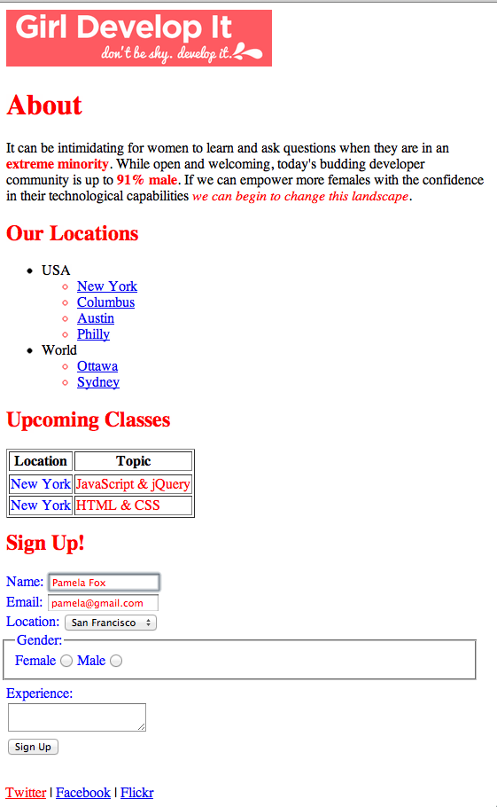

Starting with the solution from the HTML 2 exercise, add CSS rules to the webpage so that it looks like the screenshot below. All the CSS rules should have "color: red;" or "color:blue;" as the property-value pair, and just use different selector types to style the different parts of the page.
Note that there are often multiple ways to achieve the same result in CSS. Try to use a mix of the different types of selectors- id, class, position in document, etc.
